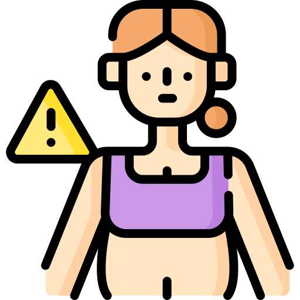
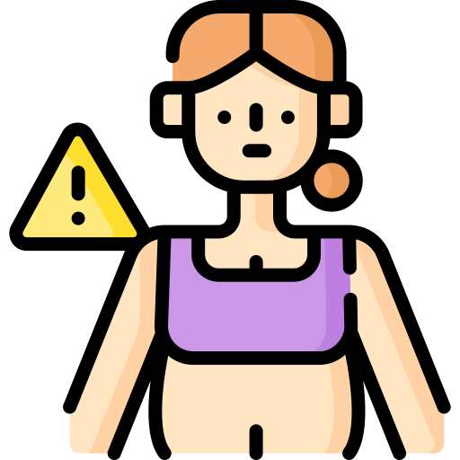

ภาวะโรคอ้วน คืออะไร ?
ภาวะโรคอ้วน คือ การที่ร่างกายของเรามีไขมันสะสมอยู่ทั่วร่างกายเป็นปริมาณมากเกินกว่าที่ร่างกายจะเผาผลาญได้หมด คนส่วนใหญ่ที่เป็นโรคอ้วนมักจะมีหน้าท้องใหญ่หรือ อ้วนลงพุง นอกจากนี้ยังพบว่าในประเทศไทยมีประชากรที่มีภาวะโรคอ้วนมากถึง 25% หรือคิดเป็นร้อยละ 48.28 ซึ่งตัวเลขเหล่านี้ทำให้เราติดอันดับ 2 ในอาเซียน! และมีแนวโน้มที่จะสูงขึ้นเรื่อย ๆ จนทำให้ประเทศไทยมีจำนวนผู้ป่วยโรคเบาหวานแตะถึงหลักล้านคน รวมไปถึงการเสียชีวิตจากโรคเบาหวานมากกว่า 200 คน/วัน โดยโรคอ้วนเกิดได้จากสาเหตุมากมายดังนี้
-
กรรมพันธุ์
หากพ่อและแม่มีภาวะโรคอ้วนจะทำให้ลูกที่เกิดมามีความเสี่ยงที่จะอ้วนได้ง่ายกว่าคนปกติ อย่างไรก็ตาม กรรมพันธุ์ไม่ใช่ปัจจัยหลักที่ทำให้อ้วน 100% (มีผลเพียง 40-70% เท่านั้น)
-
อายุ
เมื่ออายุมากขึ้น ฮอร์โมนในร่างกายจะเริ่มมีการเปลี่ยนแปลง ซึ่งจะทำให้ระบบเผาผลาญทำงานได้ไม่ดีเหมือนเด็ก ๆ หรือหนุ่มสาวทั่วไป
-
พฤติกรรมการรับประทานอาหาร
เป็นหนึ่งปัจจัยที่เห็นได้ชัด โดยเฉพาะคนที่ชอบทานอาหารที่มีแคลอรี่สูงจำพวกแป้ง ไขมัน และน้ำตาลมากเกินความต้องการของร่างกาย จนทำให้ร่างกายไม่สามารถเผาผลาญได้หมดและเกิดเป็นไขมันสะสม ซึ่งโดยปกติแล้วร่างกายต้องการพลังงาน 2,500 kCal ต่อวันสำหรับผู้ชาย และ 2,000 kCal
-
การใช้ชีวิต
การออกกำลังกายเป็นประจำเป็นสิ่งที่ดีต่อร่างกายและสัดส่วน แต่เรมักจะละเลย หรือในบางรายอาจมีข้อจำกัดอื่น ๆ ทำให้ไม่สามารถออกกำลังกายได้ เช่น คนที่มีอาการป่วยต่าง ๆ จนไม่สามารถเคลื่อนไหวร่างกายได้ตามปกติ รวมไปถึงการพักผ่อนไม่เพียงพอซึ่งจะส่งผลกระทบกับฮอร์โมน ทำให้เกิดความอยากอาหารมากขึ้น
-
โรคบางชนิด
การเกิดโรคบางชนิดอาจเป็นสาเหตุให้เกิดภาวะโรคอ้วนได้ เช่น โรคไทรอยด์ชนิดอ้วน ที่ทำให้ระบบเผาผลาญทำงานได้น้อยลง รวมไปถึงโรคคุชชิ่งซินโดรม (Cushing’s Syndrome) มีผลให้มีฮอร์โมนคอร์ติซอลสูงซึ่งเป็นตัวกระตุ้นทำให้เกิดความอยากอาหารที่สูงขึ้น รวมไปถึงเป็นตัวการปั่นป่วนระบบเผาผลาญในร่างกาย
-
ยารักษาโรคบางชนิด
ยารักษาโรคบางชนิดอาจทำให้มีความอยากอาหารมากขึ้น หรือมีการเผาผลาญได้น้อยลง เช่น ยาต้านอาการซึมเศร้า, ยาลดความดันโลหิต หรือยาที่รักษาโรคภูมแพ้, ยาคุมกำเนิด และยารักษาโรคเบาหวาน ฯลฯ